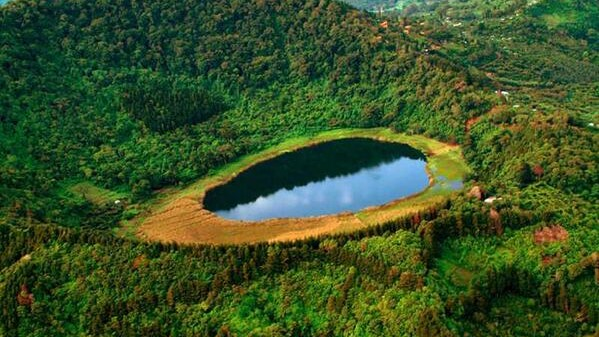

Lagos y lagunas
Más Populares

Santa Ana
Lago de Coatepeque
El Lago de Coatepeque es un lago de origen volcánico el cual se encuentra en el centro de América, es decir, El Salvador, específicamente en al sur de Santa Ana. En el lenguaje náhuantl, Coatepeque posee su propio significado, refiriéndose entonces a este lago como el Cerro de las culebras

Ahuachapán
Laguna Verde
Esta laguna posee un alto atractivo turístico gracias a su interesante flora acuática que siempre suelen darse en climas fríos y templados y también por las especies que a menudo se refugian en esta laguna, especies que varían desde aves y peces hasta reptiles y mamíferos que salen incluso delas montañas adyacentes a la laguna para así hidratarse en ella.